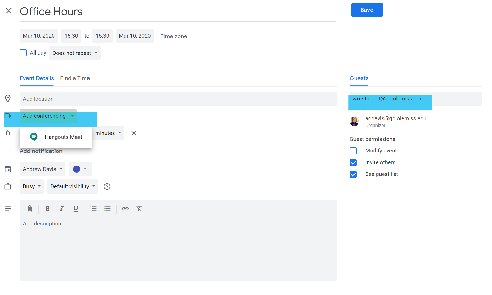

Academic Continuity Planning Guide¶
Introduction¶
If you’ve never taught online before, moving your face-to-face writing or public speaking class online without much notice may seem impossible. However, as most veteran online teachers know, online teaching really isn’t that different from face-to-face teaching. There are different tools, different affordances, and different workflows, but ultimately, your expertise and experience as a teacher is what matters.
This guide provides resources and practices that we thought might be useful. Don’t feel like you have to choose a digitally-sophisticated solution to a challenge if it makes you uncomfortable. There are multiple solutions to every problem that comes up when teaching online. Ultimately, your authenticity and transparency matters a lot: if you are discouraged or overwhelmed by a tool or approach, your students will feel the same way. We want teaching online in a pinch to be as painless as possible for you and as non-disruptive for students as possible.
We have included pedagogical best-practices, tools and resources, and subject-matter specific guidelines in this guide. We always welcome revision suggestions or new contributions from faculty.
Ethos¶
While email does allow for instant communication in an online course, the online environment can provide other means of being “there” for students, means that go beyond the email communication of traditional face-to-face classes. Here are some techniques that veteran online teachers have found useful for reaching students when they need more than a standard email:
Apps such as Google Hangouts and Skype tend to work fairly well for conferencing with students, but we’ve had the best experience with Zoom. Zoom allows instructors to start a meeting with a student by sending that student a link to the meeting via email. Students don’t need to set up Zoom accounts; as long as the instructor has the student’s email address and an account of her own, the meeting link will work. All faculty members in the DWR have UM Zoom accounts. Contact Andrew Davis if you can’t access your account.
During your office hours, log on to whichever conferencing app you’ve chosen. If you’ve chosen Skype or Google Hangouts, any students logged into these apps will see that you’re available. Even if they choose not to contact you during that time, your visibility sends an important message.
Offer multiple conferencing apps if you can. Both Skype and Zoom, for instance, or both Google Hangouts and Zoom–and remain logged into these apps during your office hours. Some students might already have accounts with one app or another, so offering a range of meeting platforms makes it easier for students to contact you. For some students, mobile apps, such as FaceTime and Duo, may be the only option. Try to be flexible and adjust your expectations for formality if face-to-face conversation is essential.
If your teaching style involves posting weekly announcements, don’t simply email these announcements as text. Instead, try making a YouTube video of just you narrating the announcements to your students. Often, these announcements merely reiterate what students can find on their weekly schedule or in the syllabus, but having this kind of weekly reminder can help students stay on task, and help keep your face and voice in a very text-heavy environment. You can post links to your YouTube video directly in the course and email it to students. Pair your link to the YouTube announcements with a bullet-point synopsis, and use YouTube’s closed captioning feature. Pairing text with video helps keep this content accessible.
If a student emails you with a persistent problem, question, or issue, invite them to set up a conference with you, and do so repeatedly. Even if students don’t take you up on this offer–and many tend not to–make it clear that they are welcome to do so. This is the equivalent of keeping your door open during office hours; it also sends the message that, within the time you’ve set aside to teach the class, students are welcome to come meet with you. Not extending this welcome repeatedly and actively can make an online instructor seem aloof and distant.
And, of course, make it clear when students can’t contact you. If you tell students from the first week that you won’t be able to respond quickly or at all on weekends, most students will be understanding and respectful of this boundary. However, you might want to consider setting aside some late afternoon or evening times during the weekdays, since these times tend to be the most available for online students. Students are often taking online courses because their schedules are otherwise full. While the boundaries on your time need to be clearly stated, a little flexibility can go a long way. While teaching online precludes the possibility of being physically present for most students, techniques such as those outlined above can help establish the ethos of a face-to-face instructor, while offering a scheduling flexibility that the traditional classroom might lack.
Office Hours¶
Holding office hours virtually can be tricky. How do you provide the accessibility your students’ need, especially if you live in a different town or city? What’s the best way to help your students with assignments from afar? What do students find most comfortable and convenient for them? There are several options to make your office hours convenient for both you and your students. Here is the Department of Writing & Rhetoric’s policy regarding office hours:
Teachers in the W&R are expected to hold regular office hours for the purpose of supporting the teaching mission through student conferencing. All teachers in the W&R are asked to hold a minimum of one weekly office hour per section taught, but no less than two hours per week. Please submit your office hours, posted on your syllabus, electronically to Glenn Schove no later than three working days prior to the first day of classes each semester.
In order to fulfill the Department’s policy, you will need to maintain between two to four office hours per week (depending on the number of sections you teach). These are times that your students should be able to contact you to discuss their writing. Here are several options that online students tend to favor:
Continually check email during your posted office hours (remain logged into email account). We have found that most students tend to prefer to communicate through email rather than video conferencing or by phone.
You can provide students with a phone number to call to discuss their writing during office hours.
You can leave a video conferencing meeting open in a specified platform, letting students know they can access it at any time during your office hours to conference.
You can also combine several of these, or offer all of them, depending on your and your students’ preferences. For example, you can leave your email running during your office hours, and let students know they can email to ask questions, or email to request a video conference. At which time, you can send them a link to meet. The most important thing is to let your students know that you are available to assist them with the various writing and multimodal assignments they will compose during the semester. It is also vital that you provide clear instruction as to how your office hours will work, and how students can take advantage of that time if they so choose. The best way to do this is to create an “Office Hours” tab in blackboard. When students click that tab, they should be able to read when you are available, and how they can access whatever platform you choose to use during office hours. We have also noticed that online students tend to have very demanding schedules, where they balance work, school, and families. For this reason, we highly recommend that you remain available to meet with students by appointment. That way, if your office hours are not convenient for some students, they will know they can still meet you with at a mutually convenient time.
Office Hour Scheduling Tools
Blackboard¶
Most DWR faculty use Blackboard to complement their face-to-face courses. However, moving a course fully online requires you to be familiar with Blackboard features you might not ordinarily touch. This section of the guide will walk you through some of the essential Blackboard content and assessment types.
Lectures¶
Narrate your PowerPoint slides or record a screencast as a way to deliver course content. You may use a computer with a microphone or a tablet to create this type of lecture. Your recording can then be uploaded to Blackboard for student viewing. External materials such as articles, blogs, videos, or websites may also be posted on Blackboard.
Assignments¶
Regular Assignments are the best assessment option for student writing. To create an Assignment, click Assessments > Assignment in any Blackboard content area. You can customize the assignment’s presentation from the setup options. Once the link is created, students will go to it to submit their work. You can then access their submitted work from the Grade Center. See below for more information about the in-line grading tool.
Journals¶
Blackboard Journals are appropriate for shorter writing activities and classwork. If you aren’t concerned with document format or in-line grading, journals can be much quicker to read and grade than traditional assignments. The Journal assessment type allows for multiple separate journal assignments. It’s often clearer for students if you create a separate journal assignment for each assigned activity. Journals can be created from any content area by click Assessments > Journals.
Class Discussions¶
For a discussion-based class, create an online discussion board on Blackboard. In any content area, click
Grading Blackboard Assignments¶
The in-line commenting and grading feature in the current version of Blackboard is an essential tool for online teachers. Instead of downloading student essays, marking them up in Word, and reuploading them to Blackboard, instructors can now leave comments directly on student papers inside of Blackboard, post comments, and enter grades, all from one screen. You can find Blackboard’s tutorial video for online grading below. Here are some things we have learned about the in-line grading feature and how well it works in writing courses:
Be conscious of the time-out feature. The inline editor times out after 60 minutes, so if you are in the middle of marking up a paper and you get up to do something else, make sure you click “Save Draft” and exit the in-line editor. You can come back to it later and pick up where you left off. If you leave the editor up and come back to it after an hour, any markup you attempt to add will not “stick.” This can also become and issue if you have a sketchy internet connection. Your best bet: Click “Save as draft” often just to be safe.
If you want to leave styled comments, or use video/audio comments, click the “A” underneath “Feedback to Learner.” You’ll have the full Blackboard content editor in a popup window.
Use “Grading Notes” to leave notes to yourself about the paper. These aren’t visible to the student, and can be really useful if you’re going to conference with a student later.
The grade center column for the assignment must be visible to students in order for them to see your feedback. If you want to release all your feedback at once, hide the column from student view, complete your feedback, then unhide the column.
Students can access your feedback from two places: 1. Go back to the original assignment link where the essay was submitted. Once the feedback is released, the comments and grade will show up. Until then, the paper the student actually submitted will show up (so they can always check to make sure that their submission “went through” correctly. 2. Go to My Grades and click on the actual graded item (the drawback to this method is that they can see the grade here without actually reading the comments.
You must leave some kind of grade in order for feedback to be visible to students. This can be tricky when you’re leaving feedback on drafts. The best rule of thumb here is to be consistent. If points for drafts aren’t a part of your grading scheme, make sure that students know that if they see “100/100” as the grade for their draft, it just means that they submitted it and you commented on it, not that they actually received an A+.
“Point Comments” work most consistently. Some of the other markup tools are more frustrating.
The in-line editor accepts most common file types (PDF, Doc, Docx, RTF), but not .pages files. See the section on file type naming for more tips about this.
Blackboard Tutorial: Using In-Line Grading
Google Classroom¶
Google Classroom provides an alternative to Blackboard that many teachers find preferable, especially for writing classes. You must have a go.olemiss.edu Google account to use Google Classroom (activate your account on MyOleMiss). Access Google Classroom at classroom.google.com. When you create a new class, you can email the access code it generates to your students so they can join the course. You can also manually add them by their go.olemiss.edu email addresses in the “People” tab.
GC is not a full LMS and should not be considered a 1-to-1 replacement for Blackboard. However, for courses that aren’t content heavy, like writing classes, its integration with Google Docs makes it more appealing.
Unlike most LMSs, Google Classroom is not hierarchical. Instead, the interface is designed around the feed/timeline metaphor. By default, all your activity shows up in the student’s “Stream.” You can also post announcements to the course stream that will be distributed to students as email.
You can organize your content in the “Classwork” tab. Instead of folders or learning modules, Google Classroom uses Topics to organize other content. Topics, like all other content on Classroom, are draggable. You can arrange them in whatever order you want. If you use Topics, make sure you select which topic you want something to go in when you create it. If you forget, you can always drag it to the correct position.
The four content types in GC are “Assignment,” “Quiz Assignment,” “Question,” and “Material.” Each one of these has its own use cases for your course.
Assignment¶
Anything you want students to turn in for a grade should be created as an Assignment. The Assignment popup screen allows you to give the assignment a title and add a description and attach any relevant documents or links. If you click “Add” and upload your assignment sheet as a Word document, it will automatically be imported into your courses Google Drive. You can add several other content types this way, or create new Google Docs content by clicking “Create.” Google Classroom does have rubric functionality now. Check out this help page if you want to know more. Otherwise, you can assign a point value and due-date for the assignment just like in Blackboard. Be sure to put the assignment in the correct Topic if you use them. Finally, If you don’t want students to see the assignment right away, clicking the arrow next to “Assign” will reveal options for “Schedule” and “Draft. Students submit assignments as Google Docs (or Word documents). You’ll then provide feedback and a grade in Google Docs as well and return their document to them when you’re done with summative comments.
Quiz Assignment¶
GC quizzes are delivered through Google Forms. The process is pretty straightforward, and if you’ve ever created a regular Google Form, creating a quiz works exactly the same way.
Question¶
Questions are good replacement for discussion forums. You can create a question thread and allow students to respond in short answer form (and to reply to each other). It isn’t as robust as Blackboard’s discussion forums, but it’s also much easier to use on the student’s end. Questions aren’t gradable, so if you want to assign a point value to student responses you’ll have to keep track of it elsewhere.
Material¶
GC “Material” is basically everything else. Whereas Blackboard distinguishes among several different content types, most content can be added to Google Classroom as Material. If you need to add links to readings, PDFs, videos, recorded lectures, etc, just add them as Material and make sure to put them in the correct topic.
Google Classroom is a great option to consider if you hate Blackboard or if you’re already comfortable with Google Docs. We’ve created a very basic WRIT 101 Google Classroom course for you to explore. To add it as a student, go to classroom.google.com and use the code noyclsp to join the class.
To be added to the class as a teacher (to copy it or see the teacher-only features) just contact Andrew Davis.
Video Tools¶
There are a variety of tools to support synchronous video communication between you and your students and among your students themselves. Each platform has its own affordances and advantageous use cases.
Zoom¶
All UM faculty, staff, and students have centrally managed Zoom accounts for video meetings. Please visit Zoom’s Getting Started page for more information about downloading and using Zoom.
When signing in to Zoom, select “Sign in with SSO” and enter the domain “olemiss.” You can also go directly to https://olemiss.zoom.us. You will be prompted to sign in with your MyOleMiss credentials.
All UM Zoom accounts have Pro licenses for unlimited meetings.
Zoom is a good choice for larger meetings, webinar-style presentations, or open “office hours” style meetings. Zoom also allows the host user to record the meeting to their computer. This is very useful if you’re using Zoom for lecture capture. Feel free to contact Andrew Davis if you want to discuss use cases.
Zoom integrates with Blackboard, allowing you to schedule and manage class meetings without leaving your Blackboard Course.
Google Hangouts Meet¶
Google Hangouts Meet is the Google Suite video conferencing solution. It integrates with go.olemiss.edu calendars and email. Like Zoom, a user can go directly to https://meet.google.com, sign in to a go.olemiss.edu account, and initiate a new video meetng. Also like Zoom, a user can generate an access link to send to anyone else who needs to join the meeting (including non-go.olemiss.edu users).
Google Hangouts Meet is an ideal solution for Google Calendar users because it’s already integrated. When you go to create a new event in your go.olemiss.edu calendar, you can click “Add Conferencing” to automatically pair a Hangouts Meet link with the event. When you add a student to the event, they’ll receive an invitation in their email and it will go on their Google calendar.
add Google Meet to an eventFor more information about Google Hangouts Meet, visit the Google help pages.
FaceTime, Duo, WhatsApp, Facebook Messenger, etc¶
There are countless other video chat apps that your students may use. Try to be as flexible as possible with platform if it’s really important that you meet a student face-to-face. Video conferencing works best on a laptop with a good broadband connection. For some of our students, that’s not realistic for a variety of reasons. Sometimes, a good ole-fashioned phone call is the best way to resolve confusion and technical frustrations.
Best Practices¶
Adapted from UM Academic Outreach
For managing your students¶
Choose one form of communication with your students and stick to it. In focus groups, students said they preferred information to be posted in the announcements section of your Blackboard page, and then sent to them via Blackboard email to their UM email.
Communicate with your students early and frequently. Cultivating a sense that you are present with the students in a meaningful if non-literal sense is crucial to successful online teaching. Begin the online experience with some kind of very low stakes community-building exercise, deployed as early as possible, to help students feel like they’re part of a community rather than individuals accessing course materials in parallel, isolated from each other.
Use tools and approaches familiar to you and your students: Try to rely on tools and workflows that are familiar to you and your students, and roll out new tools only when absolutely necessary. If a closure is caused by a local crisis, it may be already taxing everyone’s mental and emotional energy; introducing a lot of new tools and approaches may leave even less energy and attention for learning.
Contact Andrew Davis if you have a student who is utilizing classroom accommodations so you can be sure to maintain those during periods of academic disruption.
Be sympathetic and flexible for students in distress, who lack the resources to fully access your class online, or who are unfamiliar with online learning.
Check in on students working behind or who are not logging into Blackboard during the academic disruption. They may be confused, sick, or distracted by caregiver responsibilities.
For managing your course¶
Focus on learning outcomes even if you need to adjust the specific activities that contribute to those outcomes. Keep students moving toward those outcomes. Avoid “busy work.”
Prioritize course activities and focus on delivering the ones with the most significant impact on learning outcomes. You will have to reconsider some of your expectations for students, including participation, attendance, communication, and deadlines. As you think through those changes, keep in mind the impact this situation may have on students’ ability to meet those expectations, including illness, lacking power or internet connections, or needing to care for family members. Be ready to handle requests for extensions or accommodations equitably.
Rearrange course activities if needed to delay those activities where face-to-face interaction is most crucial.
Provide Regular Feedback: Giving students detailed feedback on their writing and/or speaking is extra important when you can only communicate with students virtually. Do your best to return work promptly and maintain constant communication with students about their submitted work. You may want to reconsider your stance on responding to drafts or accepting revisions since your students wont have the in-class support they might have come to expect.
Student Technology¶
Keep in mind, not all students may have appropriate technology or high-speed Internet at home. If you and your students will be meeting synchronously or sharing video files, check technical recommendations below. Though students may be able to engage if they do not fully meet the recommendations, they will have less difficulty if they can meet them. If a student reports they are having issues, refer them to IT for help. If they continue to have difficulties, you will need to work individually with students to determine what is plausible.
Browser: Latest version of Microsoft Edge, Google Chrome or Mozilla Firefox (AVOID SAFARI when interfacing with Bb).
For operating system: minimum of Windows 7 or Mac OS X v10.12 (“Sierra”). Computer should meet the minimum hardware requirement for its operating system (see website for Apple or Windows for info).
For reliable audio-visual sharing: a consistent Internet upload speed of at least 2Mbps. You can check your connection on https://speedtest.net.
Processor: 2.0 GHZ or better.
Memory: 2GB or better.
External or built-in webcam/microphone/speakers/mouse.
It’s a good idea to gauge student internet/bandwidth access in order to anticipate possible assignment difficulties down the road. This could be as simple as an email to your class asking students who have poor or inconsistent bandwidth access to contact you or as complex as a survey about specific technologies.
Try to be as flexible as possible with students. It’s a good idea to have low-tech alternatives in mind for your assignments that have high-tech requirements.
Writing Centers¶
In the event of a public health closure of UM campuses, the University Writing Centers are prepared to continue meeting the needs of our students through our online services. While we may not be able to run our centers at full capacity due to possible staffing limitations, we will continue to offer access to our two types of online appointments.
Live Chat Appointments¶
Live chat appointments are ideal for getting immediate feedback and answers to questions. The student and writing consultant are able to type messages, share drafts of writing projects, and make changes in real time. This type of appointment requires a consistent internet connection for the length of the appointment. Live chat appointments are best when conducted with a personal computer or laptop rather than a mobile device.
Correspondence Appointments¶
Correspondence appointments are asynchronous and ideal for getting feedback and answers to questions over a longer period of time. Students provide their draft along with information/requirements for a writing assignment prior to the reserved appointment time. About an hour after the reservation time, the student will receive an email notification that feedback has been uploaded by the writing consultant. These appointments can be completed without a consistent internet connection. A student can upload their paper from any wi-fi connection and return to our scheduler at a later time to download their written feedback. If you or your students have any questions, please visit our website for more information and step by step instructions: https://rhetoric.olemiss.edu/writing-centers/online/
You can find the most current information on UM’s response to coronavirus at https://olemiss.edu/coronavirus.
Note: In the event of an institution wide closure, please do not require your students to use the WCs as we will likely be operating at a lower staffing capacity. You are welcome to offer extra credit or incentives, but please keep in mind that our online services may be in high demand across all campuses and department
Library¶
Library Building Hours¶
The library building is open for the time being, from 7am-5pm this week and 7am-7pm for the following weeks. This is subject to change, but you can go to the Library hours page for a full up-to-date schedule. All carrels are open, books can be checked out, library computers/printers/scanners are available, and `StudioOne is open <https://calendar.lib.olemiss.edu/allspaces`_> for filming and reservations.
The IDEALab, Starbucks, and group study rooms are currently closed.
Extended Due Dates¶
All material currently checked out will be due May 8th. To return items through the mail, contact the library at libadmin@olemiss.edu or 662-915-7091 for details.
Interlibrary Loan¶
We have suspended ILL of physical items, but continue ILL of articles and chapters to the extent that other libraries can supply them. Be prepared for some possible delays.
Scanning Course Materials/Reserves¶
The Libraries can digitize materials needed for your course; if you have materials on course reserve, or need your course texts available electronically, apply using the digitization request form.
For further information about copyright and fair use in times of crisis, you can read a detailed statement here.
Book Ordering¶
Book ordering is open until April 17, and we’re continuing to process book orders until then. If you’d like a physical book, we’ll honor the request, but you’ll have to come and pick it up as normal.
eBooks¶
eBooks are an option as well, and I’m happy to look for multi-user or unlimited-user ebooks for any course materials and get them in place by next week. We also have temporary unlimited access to many ebooks we currently own, so if you’d like to know the status of any ebook in our catalog, let Alex Watson know. Access to ebooks is available through OneSearch or the library catalog, and Alex Watson can get direct links for embedding purposes on request.
Videos, Tutorials, and Virtual Presentations¶
Library presentations are being made available virtually through Zoom, though they will need notice to get an expended/enhanced Zoom account set up in preparation. They also have the ability to make non-interactive tutorials and presentations on request. You can search existing library videos on the library website.
LibGuides for Courses¶
If you’d like a special library page with resources for your class, we are in a position to make those for you. Contact me about it with your course information and any specific databases, books, or resources you’d like added to it. The resulting page will have a URL that is easily shared or dropped into Blackboard. Here’s the list list of existing guides
Library Chat¶
The library will be running its standard chat reference service Monday-Friday 11:00-3:00 CST for the time being. Alex Watson will also be personally manning a special chat reference for class-specific and subject-specific questions. If you’d like to make sure he is available to chat with a student or students, feel free to make an appointment via email. Here is the direct chat link.

Finding In-Line Comments